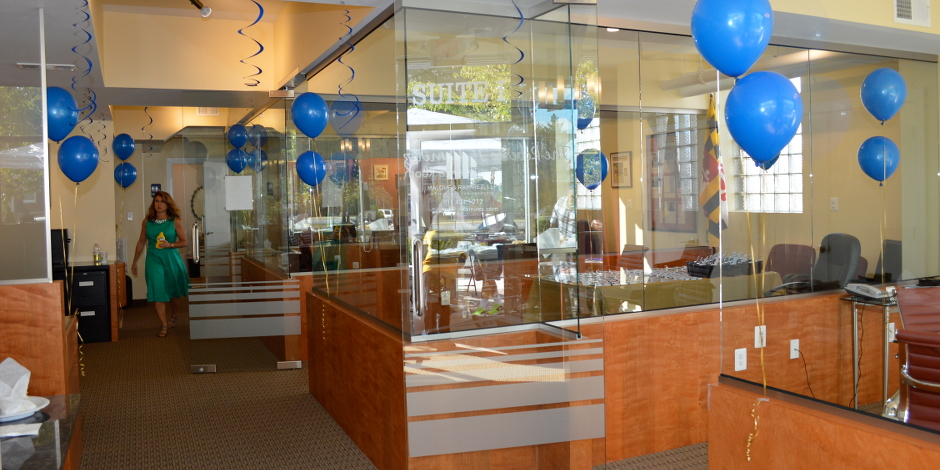
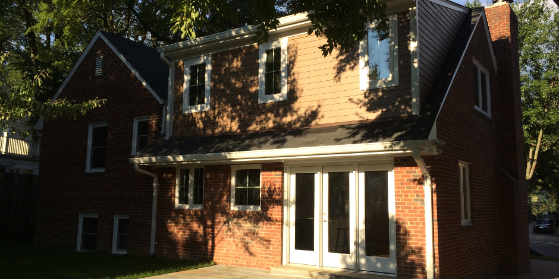
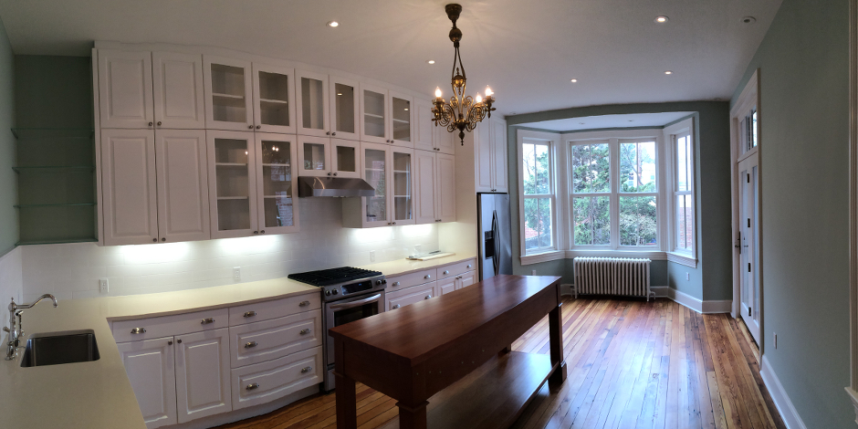

I know what you're thinking: Architects are way too expensive and only necessary when building multimillion-dollar homes--and last week's economic roller coaster isn't helping any. The truth is, architects are well worth the extra cost on large remodeling jobs because with thoughtful evaluation and design, they can meet--and often exceed--your expectations. In fact, depending on the size or complexity of the remodeling, calling in an architect might be the only way to get the project off the ground, and to ensure your dream comes true. Here's why you consider taking the plunge if you're gung ho about a large-scale redux on the house.



To See the Big Picture
An architect has the training and skill to produce a detailed design based on your particular needs and desires--a design that's sensitive to the architecture of your existing home, and scaled to the proper proportions. However, what truly makes an architect valuable is the ability to develop and refine a vision of the completed project that you can see and understand. And architects are experts at seeing not only the big picture, but also the hundreds of tiny steps between concept and completion.
After the initial consultation, and once you and the architect have defined the scope, features, purpose and functionality of the project, the architect will develop a set of preliminary drawings, sometimes called schematics. These drawings are just the first of many that you should expect to see.
To Hire the Muscle
No one understands the design of your project better than the architect, which is why he or she is the perfect person to coordinate the various construction professionals before the work starts in earnest. For example, an architect will meet with structural engineers or HVAC mechanics prior to construction to discuss the design, answer questions and ensure everyone knows their job.
The architects' plans make all the difference in translating your dreams to the details a contractor needs. If a problem should arise--which often happens--the plans will act as a record of what should have been done, and the architect will find a solution without compromising the design, your needs or your wallet.
To Go Green
More and more architects are starting to design buildings that are environmentally sensitive to both the planet and the homeowner. Considering sustainability in concept and construction will ensure your investment lasts a long time, limits its consumption and saves you money through efficient design.
The options available vary widely depending on the experience of the architectural firm and the circumstances of your project. Even if you're not plunging into a photovoltaic array or a backyard wind farm, smart choices can make significant, smaller gains. Consider using recycled and nontoxic materials, solar or passive water heaters, efficient insulation and a trustworthy thermostat. Because many of these measures involve whole-house systems, it's critical to plan them in advance.